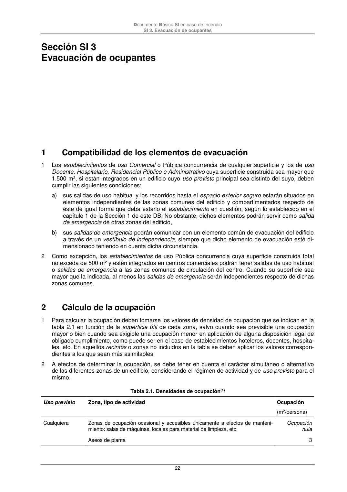

DB-SI · Fragmento de PDF p22 · versión 2025-03-04 · capa oficial
Formatos: JSON compacto · Markdown · PDF fuente
Ámbito del documento · texto del ámbito · documento y tablas
ID técnico a0050 · PDF pág. 22 · jerarquía no validada por persona · no es capítulo: sin_linea_de_encabezado · padre: raíz · literal original en el contenido: «capítulo 1 de la Sección 1 de este DB. No obstante, dichos elementos podrán servir como salida»
capítulo 1 de la Sección 1 de este DB. No obstante, dichos elementos podrán servir como salida de emergencia de otras zonas del edificio, b) sus salidas de emergencia podrán comunicar con un elemento común de evacuación del edificio a través de un vestíbulo de independencia, siempre que dicho elemento de evacuación esté di- mensionado teniendo en cuenta dicha circunstancia. 2 Como excepción, los establecimientos de uso Pública concurrencia cuya superficie construida total no exceda de 500 m² y estén integrados en centros comerciales podrán tener salidas de uso habitual o salidas de emergencia a las zonas comunes de circulación del centro. Cuando su superficie sea mayor que la indicada, al menos las salidas de emergencia serán independientes respecto de dichas zonas comunes. 2

PDF fuente redistribuible: copia fiel enlazada en esta página (SHA256 verificado).